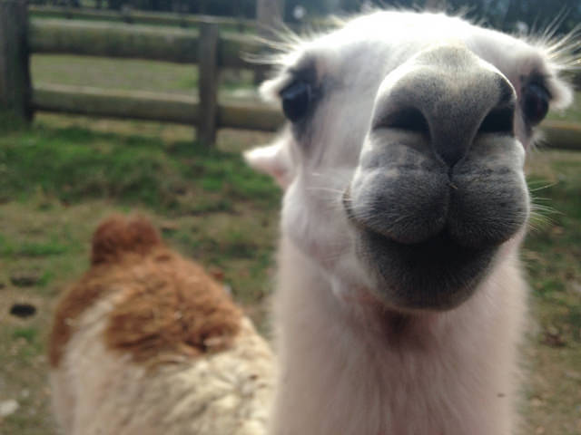
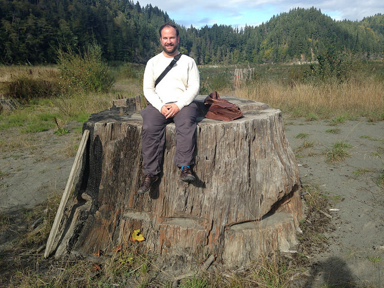

Eldan and I recently went to the Olympic Peninsula to visit my parents. It’s a beautiful place, and since my parents recently moved there, there’s a lot there that’s new to all of us. One day of that trip in particular stands out to me in particular as having been all about the anthropocene.
We started that day by going to the Olympic Game Farm, which is both hilarious and terrible. When you arrive, you are cautioned to remain in your car, although you’re allowed to roll the windows down, in order to feed the animals slices of bread. We all felt weird about feeding the animals, so we didn’t buy any.
In retrospect, I’m pretty sure that ours was only car in the park with no bread in it. The animals are tame and they know you’re there to see and interact with them, and the bread is definitely what they get out of the arrangement.

A resident llama
It had been a long time since I had seen something as funny as my dad’s reaction to a yak ambling over to the truck and sticking its whole head in his rolled-down driver’s-side window. The yak’s demeanor was somewhere between that of a parking attendant and a friendly dog. During our visit, we got sniffed at and snorted on with snuffly broad wet noses and drooled upon and unblinkingly stared at and followed by a variety of ungulates. We saw a fat old toothless brown bear that would wave at you Maneki Neko style for a slice of bread, and a few other ones that were younger and and slimmer. They weren’t the sad part.
The other predators were the sad part, especially the ones that were native to the Olympic Peninsula. Why keep two black bears in cages when there are many more black bears outside the cages, too? Or a herd of elk, really? They were there because they had been born in captivity and would have no idea how to comport themselves in the wild. The animals there can’t be released, so there they are, for tourists to gawp at and throw slices of bread at. The only reason they are in this world at all is because humans decided that it would be so.
The Olympic Game Farm is full of white elephants.
Later that day, we went up to a dried lake bed that had once been Lake Aldwell, which was created by damming the Elwha River. Some lumber baron or another had decided to dam the lake in order to produce hydroelectric power, and logged the land that was going to be flooded. So there was a lake and a dam for a hundred years there, and people went boating and fishing.
A couple of years ago, we collectively decided that it was better to un-dam the Elwha. The dams on it were generating only a fraction of a percent of the state’s power, the affected course of the Elwha had caused flooding elsewhere, and the ecosystem in the Olympic National Park was adversely affected by the dams. Anyway, dams aren’t natural, so why would we have them in a National Park? So we blew up all the dams.
It was a start, but it was more of an eraser than an undo button. The river flowing through the former lakebed was a pale gray, because it carried a hundred years of backed-up sediment. When my parents had gone to the same spot a month earlier, they had seen sockeye running there already, and that was because some of the salmon had been landlocked for generations, and then washed out to sea with a bunch of lake water and exploding dam bits.
What would it have been like for them to arrive in salt water?
On the banks of the Elwha, the stumps of huge trees that were cut down a hundred years ago are exposed now. Eldan and I stood on top of one of them, and it was easily seven feet in diameter, as big around as the trees in the Grove of the Patriarchs. What had its lumber been used for?

Eldan on that big stump.
Earlier in the trip we had gone to the Jamestown S’Klallam carving shed and wondered at the size of logs that were waiting to be carved into totem poles- huge logs, 700 or 800 years old, the woodcarver had said, but they were only half as big around as this stump.
We can free the Elwha and its salmon, but we can’t know what it would have looked like if we had never dammed it. And we’ll never have that tree back, and in a hundred years, there may well be tame elk and black bears at the Olympic Game Farm, or a population of feral yaks on the Olympic Peninsula.